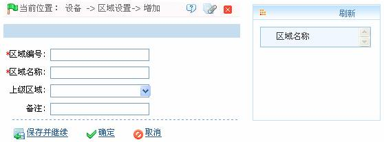
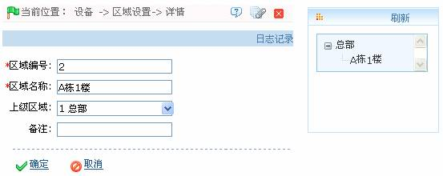

5.1 区域设置
区域是一个空间概念，可方便用户对特定区域内的设备进行管理。
在考勤系统中，区域设置是对设备进行区域划分，区域概念的突出特点是为了方便系统自动管理设备上的用户名单。将不同的设备（一个设备只能属于一个区域）设置在一（多）个区域里，然后将人员也分配到一（多）个区域里，系统将会实时（不定时）的自动将这些人员下发到设备里去，不需要用户每次手动的去管理设备上的用户名单。
在门禁系统中，设置区域后，在实时监控时可以根据区域对设备（门）进行过滤。
系统默认设置一个名称为【区域名称】，编号为【1】的区域。区域设置操作包括新增区域设置和撤消区域设置操作。
1、新增区域
（1）、点击【设备】 【区域设置】
【区域设置】 【新增】，显示新增区域页面：
【新增】，显示新增区域页面：

根据需要设置各参数，具体设置方法如下：
区域编号：输入区域编号，不可重复。
区域名称：输入区域名称。
上级区域：单击 按钮，在弹出区域下拉框中，选择该区域的上级区域。（可不选）
按钮，在弹出区域下拉框中，选择该区域的上级区域。（可不选）
（2）、设置完成后，单击【确定】按钮保存，并返回区域设置页面，此时区域列表中将显示刚新增区域。
2、撤消区域
（1）、在区域设置页面的区域列表中，单击选中需撤销的区域，然后单击区域列表左上方的【撤销区域】按钮，或直接单击区域所在行的“相关操作”下对应的【撤销区域】按钮，进入撤销区域的确认页面：

（2）、单击【确定】按钮，撤销被选中的区域，并返回区域设置页面，此时区域列表中将不再显示已撤销的区域。
3、编辑区域
（1）、在区域设置页面的区域列表中，单击“区域编号”，或单击区域所在行的“相关操作”下对应的【编辑】按钮，进入编辑区域页面：

（2）、根据需要修改各参数（修改方法，同新增区域处的参数设置一致），修改完成后，单击【确定】按钮保存修改后的区域信息。